Walzenkammer & Saugleiste
Haare, Fasern und Rückstände entfernen. Walzen und Öffnungen frei halten.
KWA Stift Rottal · PUDU CC1 Pro
Kurzanleitung für das eingewiesene Reinigungsteam.
19.10.2026 · Version 1.3Vor Handarbeiten: Aufgabe beenden und ausschalten. Vor Arbeiten an der Unterseite Tanks leeren und den Roboter wie eingewiesen sichern.
Haare, Fasern und Rückstände entfernen. Walzen und Öffnungen frei halten.
Mit klarem Wasser ausspülen. Bei automatischem Wasserwechsel die Innenwände alle 3–5 Tage gründlich reinigen; bei Belägen früher.
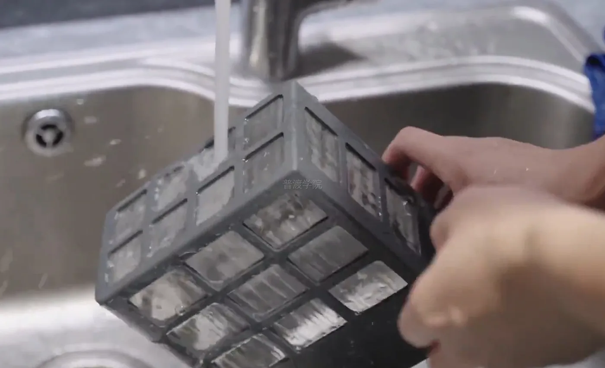
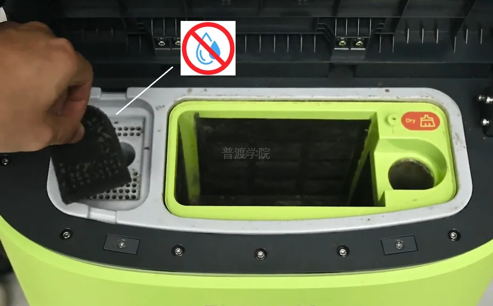
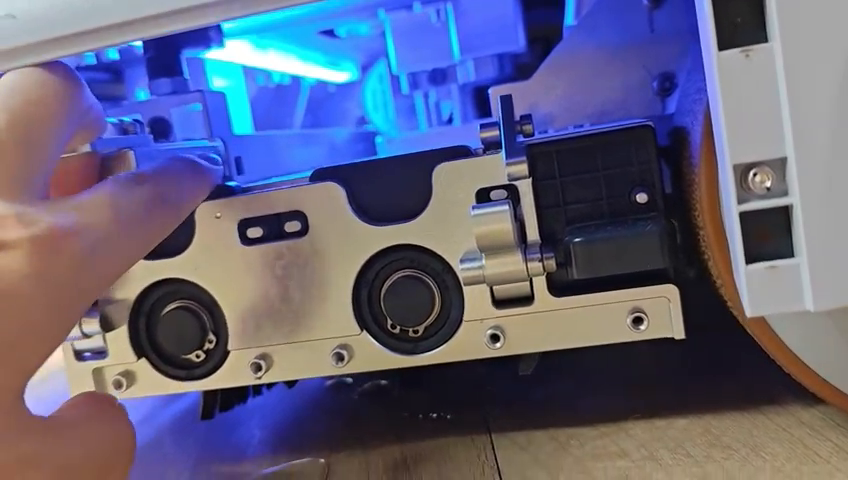
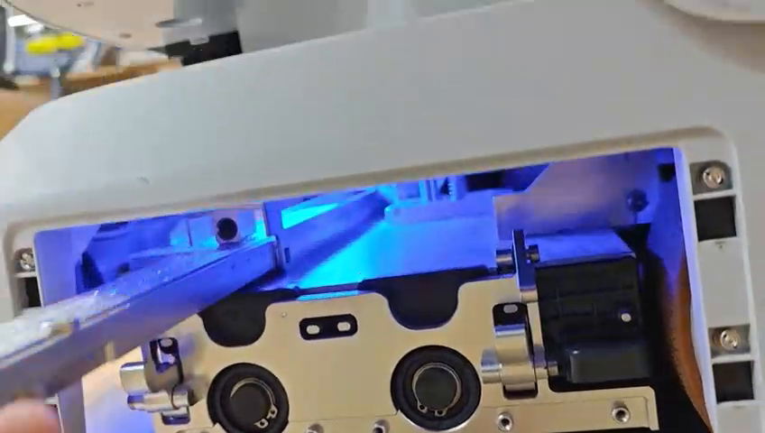
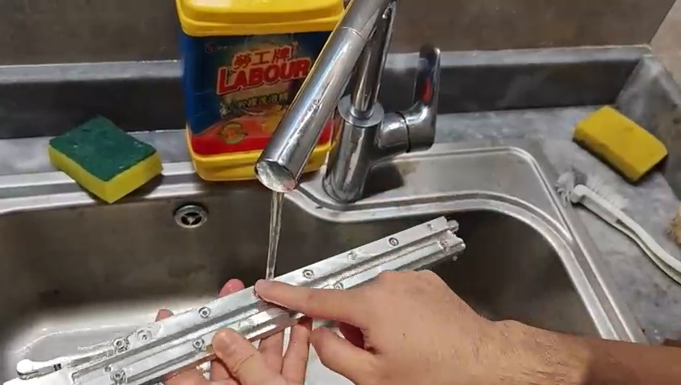
Nur durch eingewiesene Mitarbeitende durchführen. Danach korrekt einsetzen, befestigen und kurz auf gleichmäßigen Wasserfluss testen.
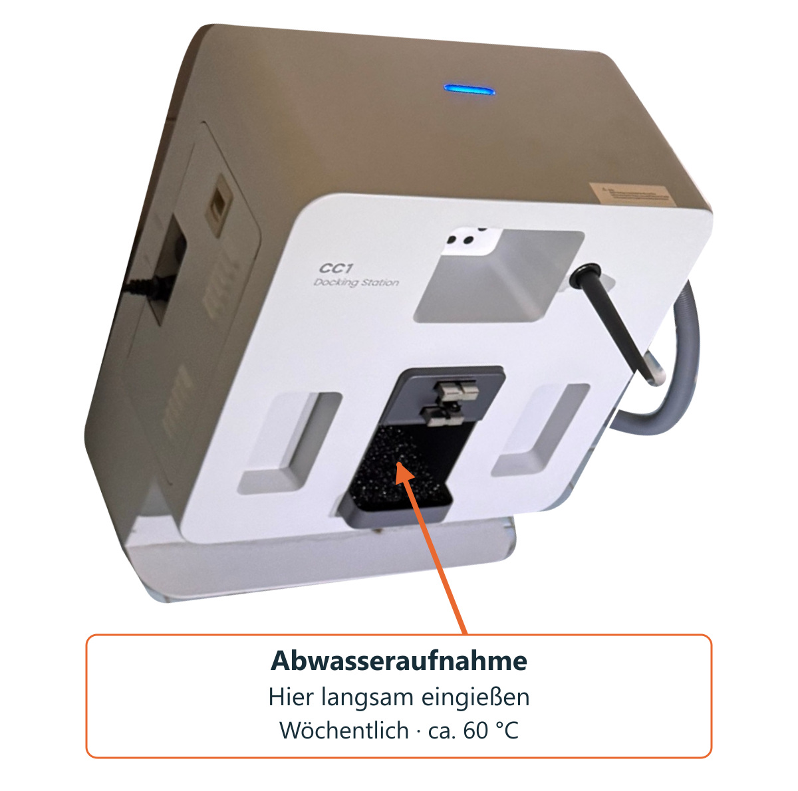
Warmwasser langsam in die im Bild markierte Abwasseraufnahme geben.
Kein Wasser auf Ladekontakte oder Gehäuse. Die Temperatur gilt nur für die gezeigte Abwasserspülung, nicht für den Frischwassertank.
Bilder antippen zum Vergrößern. Die gezeigten Werte und Stufen sind Beispiele, keine empfohlenen Vorgaben.
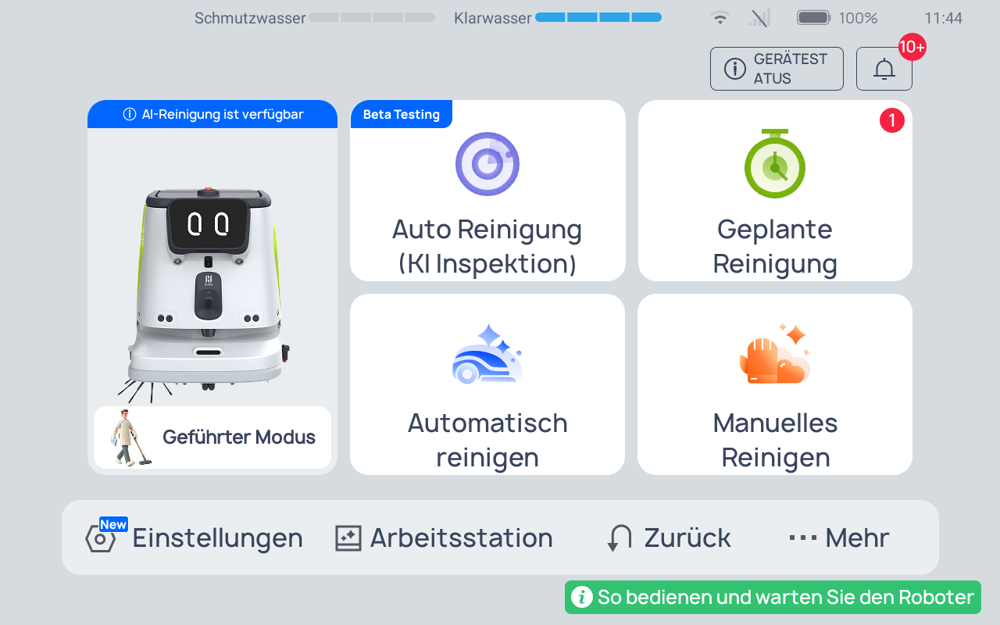
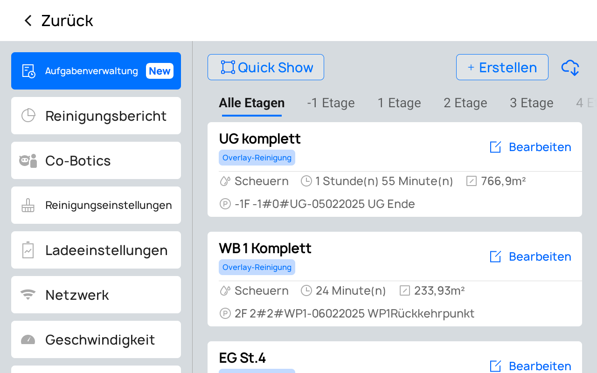
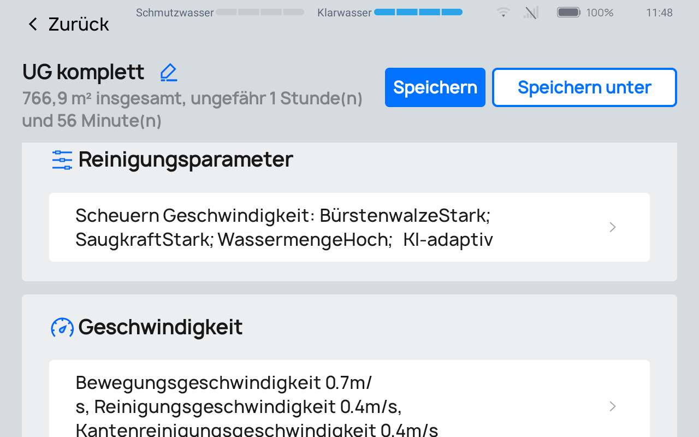
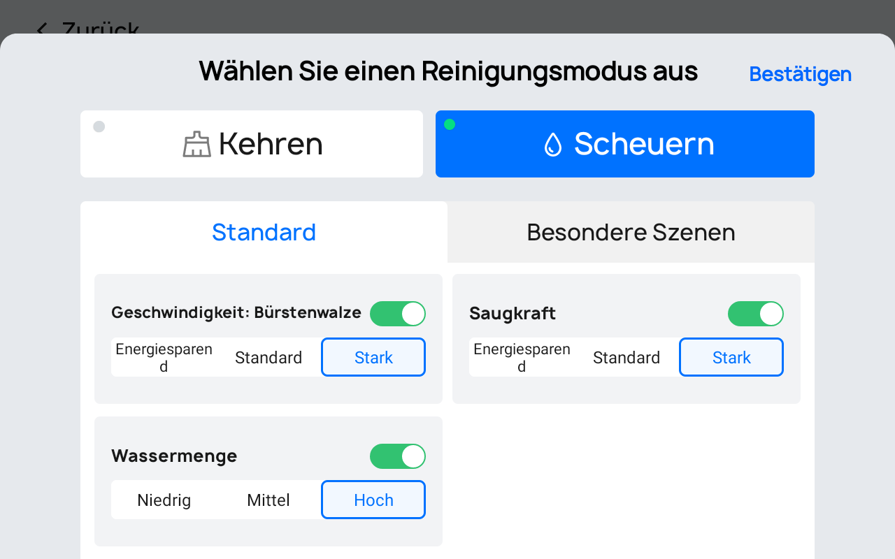
Jeder Parameter hat drei Stufen. Auf Holzböden nur die freigegebene Wassermenge verwenden.
Fahrgeschwindigkeit: kann etwas höher eingestellt werden.
Reinigungs- und Kantenreinigungsgeschwindigkeit: zunächst eher niedrig wählen.
Eine vollständige Aufgabe testen: Reinigungsbild, Wasser und Akku prüfen. Bei sehr langsamer Reinigung reichen Wasser oder Akku möglicherweise nicht für die gesamte Aufgabe. Geschwindigkeit selbst schrittweise anpassen.
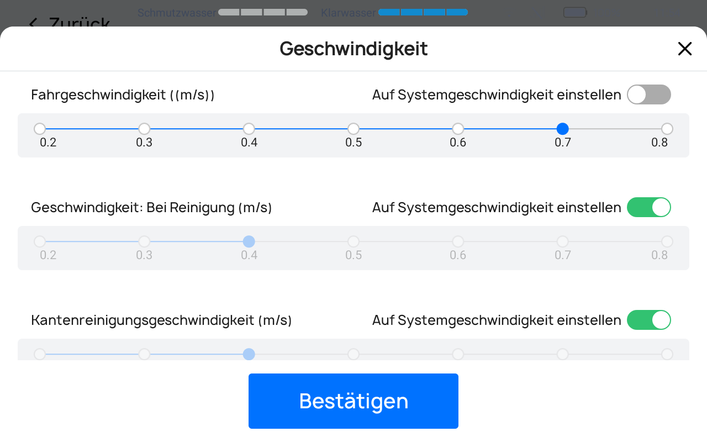
Systemschalter aus: eigene Reinigungsgeschwindigkeit einstellen.
Systemschalter an: „Auf Systemgeschwindigkeit einstellen“ übernimmt die Systemvorgabe.
Danach Bestätigen → Speichern.
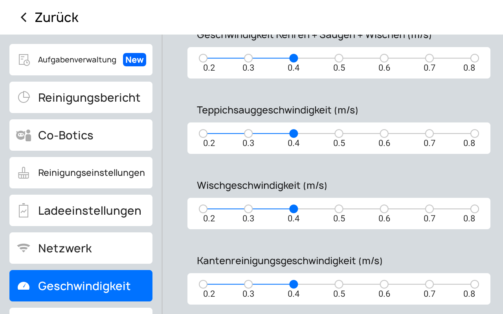
Anschließend in jeder gewünschten Aufgabe in der Zeile „Geschwindigkeit: Bei Reinigung“ den Systemschalter einschalten → Bestätigen → Speichern.
Deutsche Original-Screenshots vom 19.10.2026; Pflegebilder aus der vorhandenen CC1-Pro-Anleitung. Die wöchentliche 60-°C-Abwasserspülung und Standortintervalle folgen der Einweisung von Xi Wang.
PUDU Academy · CC1 Pro · Workstation V4.0